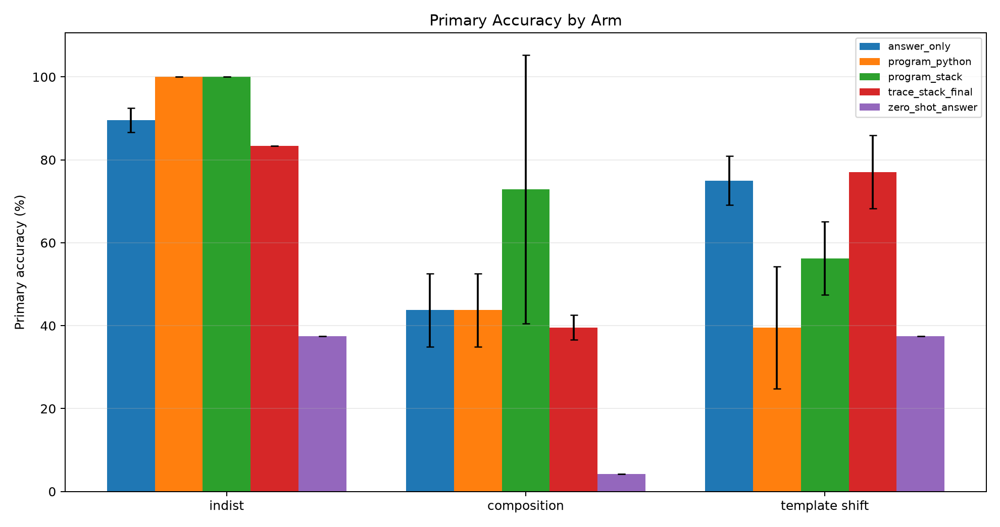
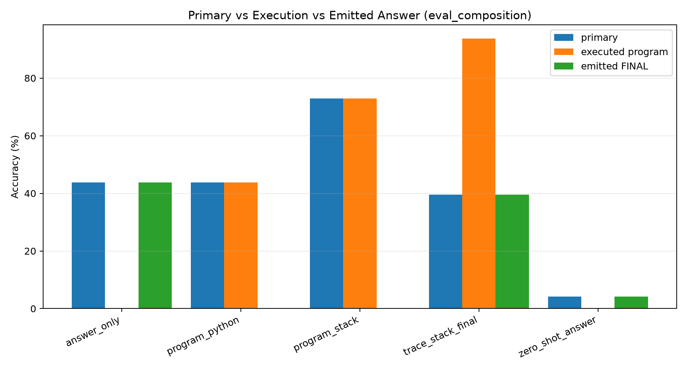
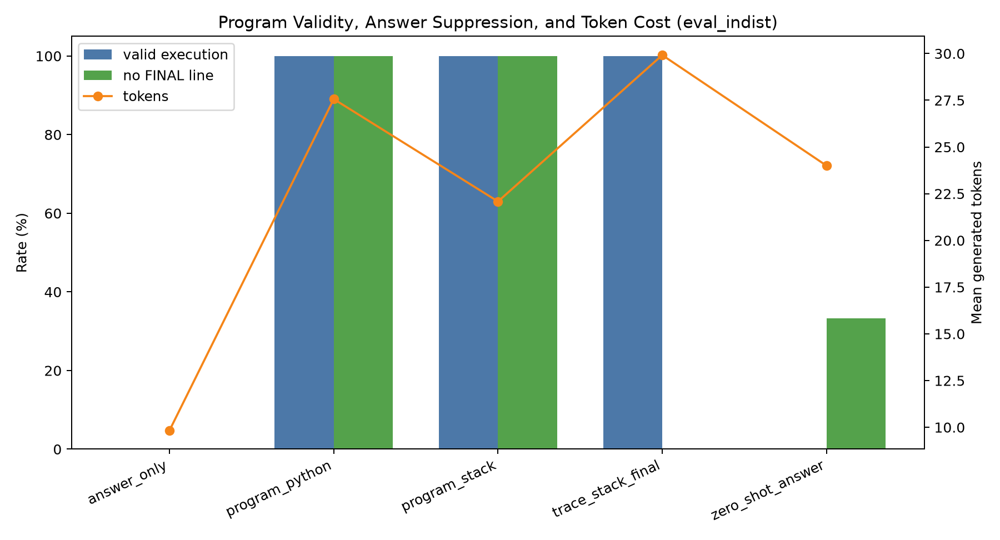
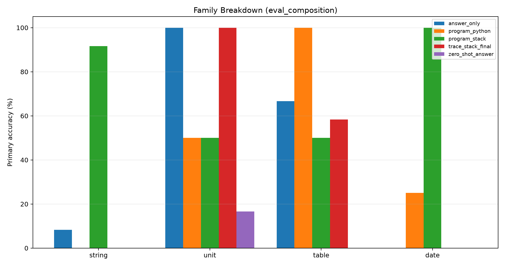
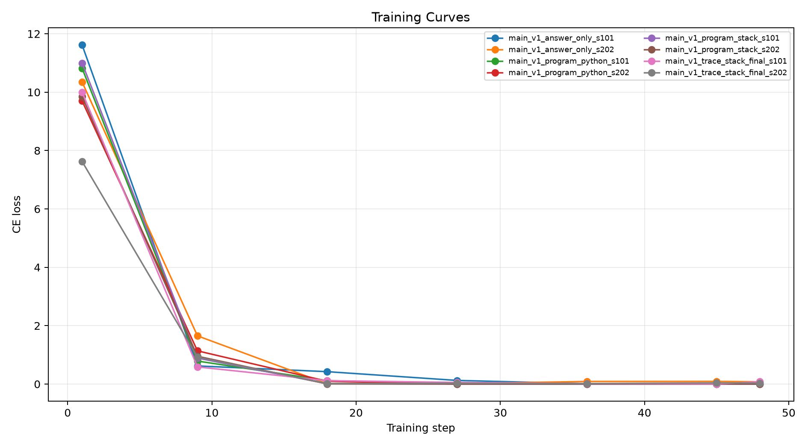

This experiment tests whether a local 4B language model can compile deterministic office-style tasks into executable programs when the final answer is absent from the program-only targets. Program-only outputs are parsed and executed by a deterministic interpreter; correctness is based on the interpreter result.
The task factory creates string, unit-conversion, table-lookup, and date-offset examples. The training split contains atomic operations, while the composition split recombines known primitives into held-out multi-step procedures. Four arms are compared: `answer_only`, `trace_stack_final`, `program_stack`, and `program_python`.
For program-only arms, the primary metric is strict execution accuracy: the generated program must execute to the correct answer and must not contain a `FINAL` line. For answer-emitting arms, the primary metric is exact match on the parsed `FINAL` line.
| suite | arm | split | runs | n_total | primary_accuracy_mean | primary_accuracy_std | exec_accuracy_mean | valid_exec_rate_mean | no_final_rate_mean | mean_new_tokens_mean |
|---|---|---|---|---|---|---|---|---|---|---|
| main | program_stack | eval_composition | 2 | 48 | 72.9% | 32.4% | 72.9% | 72.9% | 100.0% | 28.90 |
| main | answer_only | eval_composition | 2 | 48 | 43.8% | 8.8% | 0.0% | 0.0% | 0.0% | 9.92 |
| main | program_python | eval_composition | 2 | 48 | 43.8% | 8.8% | 43.8% | 58.3% | 100.0% | 33.27 |
| main | trace_stack_final | eval_composition | 2 | 48 | 39.6% | 2.9% | 93.8% | 100.0% | 0.0% | 34.21 |
| main | zero_shot_answer | eval_composition | 1 | 24 | 4.2% | 0.0% | 0.0% | 0.0% | 75.0% | 24.00 |
| main | program_python | eval_indist | 2 | 48 | 100.0% | 0.0% | 100.0% | 100.0% | 100.0% | 27.56 |
| main | program_stack | eval_indist | 2 | 48 | 100.0% | 0.0% | 100.0% | 100.0% | 100.0% | 22.08 |
| main | answer_only | eval_indist | 2 | 48 | 89.6% | 2.9% | 0.0% | 0.0% | 0.0% | 9.83 |
| main | trace_stack_final | eval_indist | 2 | 48 | 83.3% | 0.0% | 100.0% | 100.0% | 0.0% | 29.92 |
| main | zero_shot_answer | eval_indist | 1 | 24 | 37.5% | 0.0% | 0.0% | 0.0% | 33.3% | 24.00 |
| main | trace_stack_final | eval_template_shift | 2 | 48 | 77.1% | 8.8% | 50.0% | 52.1% | 0.0% | 29.12 |
| main | answer_only | eval_template_shift | 2 | 48 | 75.0% | 5.9% | 0.0% | 0.0% | 0.0% | 9.92 |
| main | program_stack | eval_template_shift | 2 | 48 | 56.2% | 8.8% | 56.2% | 56.2% | 100.0% | 19.88 |
| main | program_python | eval_template_shift | 2 | 48 | 39.6% | 14.7% | 39.6% | 54.2% | 100.0% | 26.12 |
| main | zero_shot_answer | eval_template_shift | 1 | 24 | 37.5% | 0.0% | 0.0% | 0.0% | 25.0% | 24.00 |





The strongest procedure-level result is the externally executed `trace_stack_final` program: 93.8% execution accuracy on held-out compositions, with 39.6% final-answer accuracy. The generated procedure can be right while the answer token is wrong, so the emitted `FINAL` line is a confounded score for procedure arms.
The best held-out composition arm was `program_stack`. Its family accuracies were: string 91.7%, unit 50.0%, table 50.0%, date 100.0%.
The strongest strict program-only arm reached 72.9% on held-out compositions, compared with 43.8% for answer-only. This directly measures whether executable compilation improves composition rather than merely producing a plausible answer string.
The same row has seed standard deviation 32.4%, so the result is positive but not yet stable enough to treat as a finished recipe.
The trace-plus-final procedure execution was more stable than strict program-only emission in this compact run: composition execution standard deviation was 8.8%, versus 32.4% for the best strict program-only row.
A program-only win would show that the model learned a useful executable ABI. A program-only loss, especially with high valid-execution rate, indicates that the model can imitate program syntax but still chooses the wrong operations or arguments.
This is a compact controlled run. The generated domains are narrow, and the interpreters intentionally support only a small operation set. The result should be read as an ABI and supervision test, not a benchmark of general assistant capability.